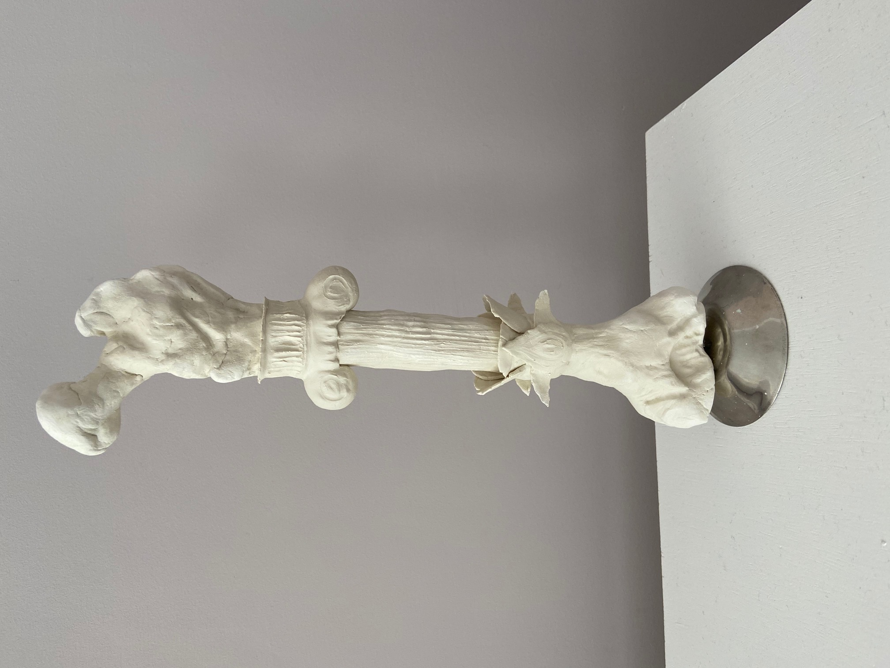
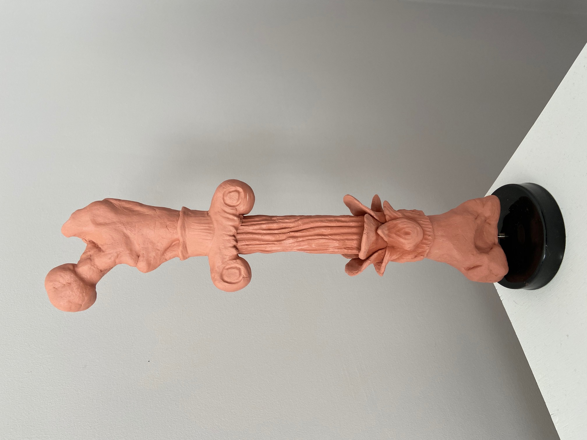

These are some of the art pieces I have made over the past couple years.
They are all made of different materials and have different inspirations behind them.

Column Final Project

Column Prototype
I did this project for one of my art modules in my second semester in my first year of university.
We were given only one word: column.
It immediately made me think of stabily and thus a femur.
The column aspects were insired by one of the first scientists to ever perform autopsies.
He was Greek, but spent his years working in Egypt.
Owl Eye
Even though my academic experience in art is very limited, I have always enjoyed it.
I drew this a couple years ago, in order to be able to relax, because of an upcoming exam.
The eyes of an old man
I have always enjoyed realism more than any other form of art.
This, I drew while looking at the person's eyes.